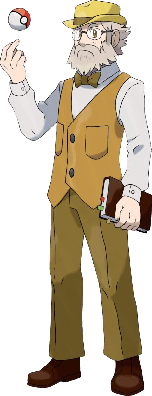

.jpeg)

REGRAS DO GRUPO
Proibido Divulgação nos Grupos de WhatsApp
Evitar compartilhar links ou informações não relacionadas ao jogo.
Conteúdo Apropriado para Maiores de 18 Anos
Garantir que o conteúdo compartilhado seja adequado para todas as idades.
Evitar Discussões e Misturar On e Off
Manter o ambiente do jogo livre de conflitos e evitar misturar assuntos do jogo com assuntos pessoais.
Proibido Pornofonia e Bullying
Não permitir a divulgação de conteúdo pornográfico ou ofensivo, assim como evitar qualquer forma de bullying entre os jogadores.
Comunicação Direta com os ADMs para Feedback
Encorajar os jogadores a relatarem problemas diretamente aos administradores do jogo para melhorias.
Sistema de Captura
Mecânica de Aparição: Pokémon aparecem no grupo quando uma cena com no mínimo 200 caracteres é enviada.
Captura de Pokémon: Os jogadores têm a oportunidade de capturar Pokémon quando eles aparecem no grupo.
Comando de Captura: Os jogadores usam o comando /pkball para lançar uma Pokébola e tentar capturar o Pokémon. Cada Pokébola tem uma taxa de sucesso diferente.
Sistema de Batalhas
Mecânica de Batalha Pokémon: As batalhas Pokémon são realizadas entre jogadores.
Turnos e Movimentos: Os jogadores alternam turnos e escolhem movimentos para seus Pokémon, que afetam os pontos de saúde do oponente.
Vitória na Batalha: O jogador que reduzir os pontos de saúde do oponente a zero ou tiver mais pontos após um número fixo de turnos é declarado vencedor.
Sistema de Torneio
Fase de Apresentação: Os participantes do torneio apresentam seus melhores movimentos e estratégias.
Regras da Fase de Apresentação:
- Três Turnos de Apresentação: Cada participante terá três turnos para realizar sua apresentação. Em cada turno, o jogador deve demonstrar um movimento ou uma combinação de movimentos.
- Pontuação dos Movimentos Simples: Se um jogador usar apenas um movimento em um turno, ele receberá 5 pontos.
- Pontuação das Combinações de Movimentos: Se um jogador realizar uma combinação de movimentos em um turno, ele receberá 15 pontos.
- Pontuação dos Movimentos com Estratégia ou Itens: Se um jogador usar um movimento combinado com estratégia ou itens em um turno, ele receberá 10 pontos.
- Penalidade por Repetição de Movimentos: Se um jogador repetir um movimento ou combinação que já foi realizada anteriormente durante a fase de apresentação, ele perderá 3 pontos. Isso incentiva os participantes a diversificarem seus movimentos e estratégias, tornando a apresentação mais dinâmica e criativa.
- Avaliação da Apresentação: Além da pontuação atribuída aos movimentos, haverá uma avaliação da apresentação como um todo. Outros jogadores e juízes designados votarão na apresentação que considerarem a melhor. A interpretação do texto escrito também será levada em consideração durante a votação, pois é importante que a apresentação seja clara e bem interpretada.
Fase de Batalha: Os finalistas participam de uma batalha, onde cada movimento reduz os pontos de saúde do adversário. O vencedor é determinado após 5 turnos com base nos pontos restantes.
Essas regras garantem que a fase de apresentação seja justa e emocionante, incentivando os participantes a demonstrarem suas habilidades e criatividade na execução dos movimentos e na elaboração da estratégia.